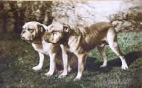
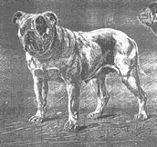

THE EVOLUTION OF THE BULLDOG A Historical Survey by R. H. Voss We prepared this History page about Bulldogs, Breeders and the evolution of our beloved American Bulldogs. There are photos and humor. If you take the time to read and understand this History, you will know more about the Hisotry of Bulldogs, than most breeders selling them today (1999*). I installed the photos, and a little humor hoping to help you to see, understand and enjoy “Bulldog History” a little better. photos are authentic. Text originally printed in 1933 in a British publication called “Our Dogs”. Mr Voss was the #1 authority and historian of his day on Bulldogs. This same article was printed before in Stodghill’s ARF Cowdog Magazine, issue #114 in 1989. R.H. Voss suggest that the breed goes back to the war dogs of the ancient Britons. Briton was made a Roman province in the year 50 AD, when the British chieftain Caractacus was defeated by Emperor Claudius. At That time there were “pugnaces” or war dogs, in Briton. They were used in war, for the contests in the amphitheater and in the chase. These fighting dogs of Briton were known as the Broad Mouthed Dogs of Briton. There is very little doubt that they were the original and remote ancestors of our Mastiff and Bulldog. They appealed to the Romans, who sent considerable numbers of them from Briton to Rome, to take part in the sports of the amphitheater, and it has even been said that the Romans appointed an officer to select British dogs and export them to Rome. There is evidence that from Italy the breed of British war dogs was disseminated over the continent in the years 50/410. Bear Baiting The Saxon kingdom of England was succeeded in 1066 by Norman Kings and the training of bulls, bears, horses and other animals for the purposes of baiting the with dogs was practiced by the jugglers who were introduced into England by her Norman conquerors. As early as Henry II ‘s time 1154 the baiting of bulls and bears by dogs was indeed a popular amusement. Henry II had gained Bordeaux on his marriage with Eleanor of Aquitaine in 1151, and this important town remained in the hands of the English till about 1411, for approximately 260 years. From 1356 to 1367 the court of King Edward III “father of Edward the black prince”, with it’s attendant sports of bull and bear baiting, was held at Bordeaux. It was in or about 1406 that Edmond de Langley, Duke of York, the forth son of seven son’s of Edward III, wrote a treatise entitled “The Mayster of the Game and of hawks to Henry IV, and in his treatise he described the Alaunt or Allen dog as a dog with a large and thick head and a short muzzle, which was remarkable for his courage, so that when he attacked an animal he hung on, and was used for bull baiting. He described the great French Alaunt, drawing a distinction between the Gentil and the Alaunt de Boucherie. The French Alaunt being a descendant of the English Alaunts exported to Bordeaux, and in turn the ancestor, without any doubt whatsoever, of the Dogue de Bordeaux, the huge fighting dog of South of France. In 1556 it is known that great numbers of English Alaunts were introduced into Spain and the island of Cuba by Philip II for the purposes of the arena.  In 1585 a Hondius painter an oil painting on an oak panel [which came into the possession of Mr. Frank Adcock] which depicted two bandogges or Alaunts attacking a wild bore in the bed of a shallow stream. One was red with a black muzzle, and the other was white with brindle ear patches, and they were both had “rose ears”, and long fine tails, and looked as though they must have weighed 100 to 120 lbs. The red dog had a firm grip on the left ear of the boar. The fact that the “pugnaces” of Briton were known as the “Broad Mouthed dogs of Briton” and that Claudian in 390 AD stated that they were able to pull down a bull, shows that these dogs were, of course, in a rough and typical manner only the original stock from which the Bulldog and Mastiff sprang. That these dogs were in the years 50/410 exported to Rome by the Romans, and form Rome disseminated over the Continent, there is no doubt. Further, it has been shown that as early as 1154 the baiting of bulls and bears by dogs in England was a popular amusement. Also it shows that from 1151 to 1411 Bordeaux belonged to England, and that the English court was actually situated there from 1356 till 1367, with its accompaniment of bull and bear baiting. It was while the English still held Bordeaux that the Alaunt was undoubtedly exported to France from 141 onwards for a period on 260 years, and he was almost certainly crossed there with some remote descendants of the British war dogs which hundreds of years previously had traveled to France via Rome. It is absolutely in keeping therefore, to imagine that the Dogue de Bordeaux as imported to England in 1895 by Mr. Sam Wookiwss and the late Mr. H.C. Brooke, was the originally descended from the English Alaunts which were exported to Bordeaux from 1151 to 1411. THE DOGUE DE BORDEAUX In 1895, in the year that Mr. John Proctor judged the breed at the Bordeaux show, it was a dog of an average height of 25 1/2 inches and of an averaged weight of 120 lbs. The skull circumference was 26 inches. Nose length as measured from the corner of the eye to the tip of the nose was three inches on the average. These dogs for many years. from the English occupation of Bordeaux onwards, were bred for encounters in the arena, being pitted against each other or against the bull, the bear or the ass, and even as late as 1906 these encounters occasionally took place. The famous Mastiff, Beaufort, whose measurements approached the standards of perfection were, 27 inch skull, and the length of his muzzle was 4 inches, whilst he stood 29 1/2 inches at the shoulder, and therefore weighted about 160 lbs, forty pounds more than the average Dogue de Bordeaux. During the reign of Mary, Elizabeth, James 1 and Charles 1, which covered the years 1553 to 1649, the bating of bulls and full grown bears by dogs was a very popular sport. Hentzner, in his itinerary, printed in Latin in the reign of Queen Elizabeth in 1598, stated that there was a place built in the form of a theater for bating and “great English dogs” which shows that in 1598 they were still very large. In 1556 Philip II became king of Spain and introduced great numbers of English Alaunts into Spain and the Islands of Cuba and Majorca for the purpose of the arena. In my own mind there is very little doubt that the dog from Burgos depicted in the old bronze plaque, dated 1625, was a descendant of these English dogs or was an imported English dog himself. It was not until 1631, in the reign of Charles I, that the name “BULLDOG” was first mentioned in England. There is a letter in the record office which was written in 1632 from St. Sebastion in Spain, by an Englishman called Prestwich Eaton to his friend George Wellingham in St. Swithens s Lane, London, asking for a good “MASTIFF” dog and two “BULLDOGS” to be sent out to him. This is definite proof that six years after the Burgos plague the export of Bulldogs {as they were just beginning to be called} from England to the sport loving Dons ofSpain, which had been commenced by Philip II 75 years earlier, was still continuing. The cropped dog depicted on the old Spanish plaque of 1625 was very noticeable a big dog and very noticeable a BULLDOG, being much underhung, with a big skull and well laid back nose. Many years later in the year 1840, Bill George imported from Spain a big BULLDOG, which was called Big Headed BIlly, whilst in 1868 Mr. Marquart brought over Bonnhomme and Lisbon, and in 1873 Mr. Frank Adcock acquired Toro and Alphonse in Madrid. All these five were termed purebred Spanish Bulldogs, and they were exactly of the type depicted on the 1625 plaque. Big headed Billy was a brindle pied, Bonhomme a brindle, Torro a red carroty brindle, and Alphonse a fawn with a black mask and white markings, and all these four dogs weighted 90 lbs. I heard it stated that Lisbon and Alphonse were both noted dogs in the arena in Spain. Torro had a 22 inch skull, stood 22 inches at the shoulder, and measured 2 1/2 inches from the corner of his eye to the tip of his nose. It is clear to me that these big 90 lb Spanish dogs were reasonably short in face with proper Bulldog tails having a downward crook at the root and at the end. They were all cropped. Whilst the Spanish Bulldog, which averaged only 90 lbs in weight. 2 1/2 inches in length of face, and which had dark eyes and a black nose and mask . Was well underhung with a moderately short crooked down tail. The Bulldogs rolling gate represented the English Bulldog as bread in the years 1556/1649, when the Bulldog was just beginning to be a different dog from the Mastiff. To the modern eyes the Dogue de Bordeaux and the Spanish Bulldog would appear to be of Mastiff type, but the Bulldog less so clearly due the fact that the English dogs which began to go out to Spain in 1556 were already much more of the Bulldog type than the English dogs that went to Bordeaux in the years 1151/1411, before the Bulldog and the mastiff had begun to emerge from the Alaunt and to take definite shapes of their own. THE SMALLER DOG APPEARS. The new system of Bull-baiting, as practiced from 1686 onwards favored an active dog of moderately low stature and size. With his nose will laid back and a protruding underjaw. The great Bulldog of 90 lbs in weight which had been in Vogue when bull-baiting was the sport of kings, was no longer wanted. Whilst the common folk who now gad the sport in hand could not afford to keep such Hugh animals. Much can happen to change a breed of a dog in fifty years and by inbreeding and breeding with a fixed purpose in view, between the years of 1686 and 1735, a dog of definite type and of an average weight of 50 to 60 lbs, was produced. The dog of 1735, was smaller in skull than the Bulldog of today 1933, longer in face, higher in shoulder, not so wide in front, lighter in bone and body, and less exaggerated in every way. The Bulldog that was gradually evolved in the years 1686/1735, though finally more than 40% lighter than his ancestors and was not only the bravest dog but actually the bravest creature on earth, not even excepting the old English Game Cock. This was an indisputable fact, which was proven time and time again. The dog which was produced in the years 1686/1735, was the dog for the bull, and it was during those years and not before then, that the Bulldog was taught and trained to pen the bull by the nose and never to attack him in any other place. As early as 1710 this method of attack became an inherited tendency and even today, though bull-bating was abolished 98 years ago, or around 1835. Reproduction of an oil painting, probably by Charles Towne, Circa 1800. DOG FIGHTING: AND THE BULL TERRIER From 1735 to 1835 the Bulldog was bread on the same lines with no alterations in type. In 1835 the cruel practice of Bull-baiting was prohibited by law and the Bulldog’s true occupation disappeared. He would probably have most died out but for the barbarous so called sport of dog fighting. Dog fighting commenced about 1690, in the reign of James II. Burnette in his “History of My Own Times” written about 1700, refers to dog fighting and the gardens at which these scenes were enacted. For fully 100 years the Bulldog was the only dog used in this cruel pastime, but in or about the year 1800 the devotees of the game sought to produce a quicker dog in the pit. At this time there were many smooth coated Old English Terriers in varied colorings, but all smart, active and alert. Excellent for Killing rats or unearthing the fox. the larger types of these Terriers were crossed with the Bulldog and the product which was a dog that combined all the dash and speed of the terrier with the indomitable courage and fighting instinct of the Bulldog. These dogs were known as Bull Terriers. In the years 1800 and 1835, when the notorious Westminster Pit flourished, the young Corinthians of those days indulged freely in dog fighting. And it is probable that a certain number of pure Bulldogs were fought in the pit till at least 1840. Web masters note: This in the beginning of the PIT BULL as we know him today or American Pit Bull Terrier. I am sorry to say that many of the so called American Bulldogs today have some Terrier blood as well as Mastiff, Bull mastiff, Dogue de Bordeaux, Louisiana Catahoula Cur, Boxier or, the modern English Bulldog. Be very cautious in buying a so-called American Bulldog. Four major guidelines, COMPARE : Breeders, Pictures, Registries and Health. The New Complete Bulldog, Champion English Bulldogs, Keep’em in the shade girls. BULLDOGS A CENTURY AGO Let us now revert to the year 1835, when bull bating, bear bating and dog fighting were abolished by law. The Bulldog was then looked upon as the associate of rogues and vagabonds and was condemned by the better class of people for keeping bad company. For five years, the Bulldog was probably only kept in existence by the fact that he still had a few admirers who stuck to him as a fighting dog. But by 1840 there were probably less Bulldogs in England than at any period during the breed existence. The bulk of Bulldogs at that time were 45 to 50 pound dogs upon the lines which they had been bred for that type and purpose had emerged about 1735, that is to say they were extremely active, powerful, game and tenacious dogs, much more leggyand much less coddley and not nearly so heavy built as our present day dogs, but nevertheless very muscular and compact, as shown in Scott’s engraving of Crib and Rosa, dated 1817. At the same time there were still in existence a certain number of much bigger dogs running up to 65 pounds in weight and these were undoubtable the remanats of the days when Bulldogs were 90 pound dogs. These remnants of the old type were mostly in the hands of one or two people, notably Bill George, who in 1838 had succeeded Ben White as a keeper of baiting and fighting dogs and they were naturally more of a Mastiff type than the smaller and more popular dog. Ben White 1836 running his Bulldogs at head of Bill Gibbons Bull. This was the position of 1840 and it was fortunate for the Bulldog that just about then, the interest in the dogs began to increase and working man fanciers began to arise who bred dogs with great care and who held small Public-House evening shows, where their dogs paraded on the sanded floors of rap rooms, the landlord usually providing the prizes, though sometimes the working men who kept these dogs, clubbed together to contribute a handsome silver collar, or something of that sort. 
THE PUG CROSS AND IT’S EFFECTS The dogs which epically appealed to those good old working men fanciers were King Charles Spaniels and Bulldogs and as they always preferred a little dog, there is no doubt that they crossed some of their smaller sized Bulldog bitches with Pug dogs, in order to reduce the size of the progeny and also to produce the fawn emut color which was then much admired. The average weight of the Pug dog of those days was 20 lbs. and their ears when not shorn off and rounded close to the head, were then as often Rose as Button. By crossing the two breeds over a decade of years, lightweight Bulldogs were produced weighting between 12 and 20 lbs., It being the desire of these dog fanciers to bantamize the Bulldog and produce as attractive a pet that would cost no more to rear than their Toy Spaniels and for which they would have a ready Sale. There is no doubt that this Pug cross had a lot to do with the prevalence later on of the Fawn Emut or fallow emut Bulldog and with the prevalence of the SCREW TAIL, although less headstrong and daredevil in character. But as the Bulldog was much more the stronger character of the two it is doubtful the alliance with the Pug actually affected the courage of the progeny and as a matted of fact, the lightweight Bulldogs of the fifties, sixties and the seventies were particularly game little dogs often quite useful in the RAT PIT. THE SPANISH INVASION In the years 1868 to 1873 the fresh importation’s of Spanish bulldogs by Mr. Marquart and Mr. Frank Adcock further increased to the numbers and probably also to the size of the large-sized Bulldogs, though only four or five Kennels used these imported Bulldogs at stud. These importation’s greatly incensed the breeders who swore by the 50 lb. dog as specifically bred for bull-baiting as being the original British Bulldog, which in actual fact he was not and it was the outburst of horror at the dangers of the Spanish Invasion which caused the formation of the Bulldog club in 1875. It cannot be proved that any fresh crosses have been made since the 1870′s, but it is said that in the middle of the 90′s a small Mastiff bitch was on more than one occasions mated to a Bulldog in order to produce dogs of greater size and substance. Whether this type is true or not, it is a significant fact that since that period we have had quite a number of dogs weighing over 70 lbs. some of them decided Mastiff type, although better rearing has doubtless played it’s part in increasing size and substance. The exhibition of the dog of today (1933*) is therefore the result of inter-crossing of the three distinct types which existed in 1859. The large size dog having been increased in numbers by crossing with the imported Spanish Bulldogs of the 70′s and possibly further increased by the alleged Mastiff cross on a limited scale is the middle 90′s. |
|


{kind=link}
{kind=link}